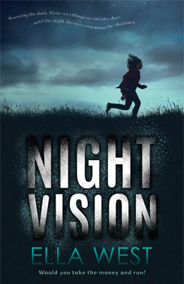
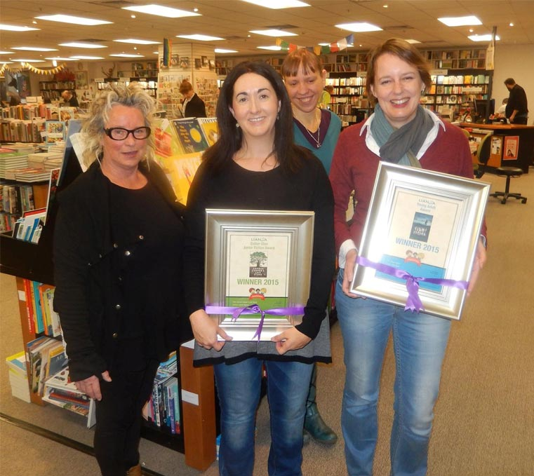

Ella West is a multi-award winner teen thriller writer who farms sheep and beef with her husband near Dunedin in the South Island of New Zealand. She likes cooking and gardening but doesn’t like cleaning the bathroom. She occasionally goes trout fishing with her family and they hate her when she catches a fish and they don’t. Her chickens keep getting out and destroying her garden. In other words, life is tough.
And then there’s the sheep.
WARNING: Do not start reading an Ella West Book when you are about to go to sleep. Ella West will not be responsible for late nights, sleeping in or missing the start of school the following day.
Latest Book
Night Vision
I'm going to write lots here about the latest book written by the amazing author, Ella West. It will include a summary of the book and any awards it has made as well. How good is free advertising.
WEBSITE UNDER CONSTRUCTION
This website is currently in its final build stages. In the mean time enjoy what is finished and keep checking for the final release!
Auckland Writers Festival
12 May 2016
Loving the Auckland Writers Festival! Talked to thousands of kids, workshops, meeting other authors, it's like, wow! And now I've done my stuff and can just sit back and listen and watch everyone else for the next four days. Thank you Auckland!!!!
2/3/16
2 March 2016
What does it mean when you have to stop writing to go find tissues (and I'm not talking about because I'm sneezing) when you are writing the last words of a book?
Great News!
21 December 2015
It's official - I can tell everyone! The New Zealand Film Commission is funding the writing of a script for Night Vision. This doesn't mean that a film is definitely going to get made but it's a step (a very small step) to that happening and it is so great that the commission thinks it's a story that could be made into a film. Wow. Very, very exciting!
19/6/15
19 June 2015
Stopped in at Unity Books Wellington in Wellington with Leonie Agnew on Tuesday. Our thanks to the staff at Unity for the amazing welcome - fantastic book shop!
4/7/14
4 July 2014
My Italian copies of Night Vision have arrived in the mail and not only are they hard cover (I've never been published in hard cover before) but the yellow piece at the bottom translates as (thank you to Google) "As poetic as The Curious Incident of the Dog in the Night-Time and as disturbing as The Lovely Bones. A fabulous novel." I'm trying to get my head around being compared with such heavy weights in the book industry. Wow. And you can buy it in Italy for 12 euro!